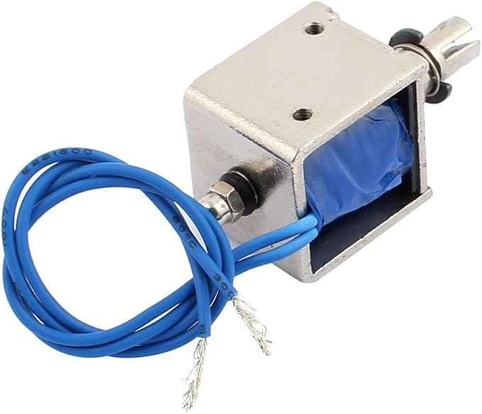

April 7, 2026
In third year of UBC electrical engineering, we had to take a project course worth six credits (twice the normal amount for a course) that was almost like a capstone but just an assigned project. This year, the project was to build a piano playing robot. This would be a device that can play music on a small 54 key keyboard, and some rough requirements were given.
The way this course was structured was that it runs for one semester, and there are groups of six. Each group is initially split into three subteams, for mechanical systems, electrical systems, and software/controls. There was a 50% midterm demo, where each subteam was to come up with a prototype of their respective parts of the robot, and then a 50% integration demo at the end where the whole group is graded on the performance of their entire robot.
For this project I was on the mechanical subteam, and as such the stuff I write is from my pov. Also, when I say "we", I mean the collective of the group. Because the requirements were rather unclear, we initially thought we could purchase prebuilt solenoids for the actuators. Turns out this was not allowed, but the prebuilt solenoid allowed for some "inspiration" from its design.

We ended up first buying this JF-0826B solenoid
So basically for a solenoid, its strength is basically proportional to the \( \frac{d \phi}{dx} \), where \( \phi \) is the magnetic flux through the coil. With the common reluctance type solenoids, this basically means that it is important to have a high permeability casing around the coils such that the reluctance of the magnetic loop is smaller. There were a couple ideas on how to do this. I think I thought of a design using waterjet cut sheet metal, but eventually a group member came up with using a regular mild steel box section